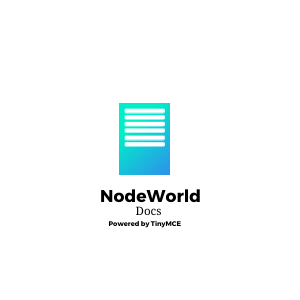

<br> <p>Welcome to NodeWorld Docs, the official doc system for NodeWorld! Use the controls on the top to navigate through this editor.<br> To download your edits, use the print button on the top and save as PDF.<br> To save your edits, open <code>Tools ==> Source Code</code>. Then copy the code. Next time, open the <code>Tools ==> Source Code</code> again and paste the code and click save.<br> Phew. You <b>FINALLY</b> now can edit this document and play with this tool.<br><br><br> Copyright (c) 2022 Arjun J. All Rights Reserved. </p>
Ignore the warning at the top (click X)
Logo generated by
DesignEvo free logo designer